Current card tags → sprite sets · 1/9
Existing assignments, including equipment and card-specific exceptions. Matched rules are shared by the preview and solo/co-op combat.
- attack · fx:arcane + fx:blight + fx:ritual · sceptreArcaneAttack → heavyImpact · mundaneLow · 0.8× (target)Arcane Strike, Arcane Strike +
- attack · fx:blade → slash · mundaneLow · 0.8× (target)Strike, Strike+, Twinblade Flurry · +7 more variants
- attack · fx:blade → whirlwind · mundaneHigh · 1.12× (target)Executioner, Executioner+, Ruinous Blow · +7 more variants
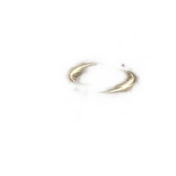
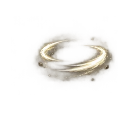
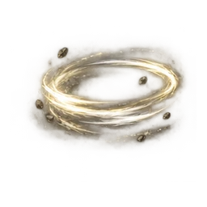
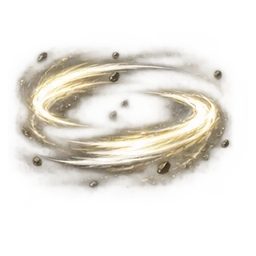
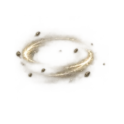
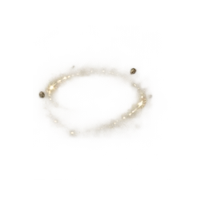
- attack · fx:blade → crossSlash · mundaneLow · 0.8× (target)Bloodhunter's Strike, Bloodhunter's Strike+, Twin Fang · +1 more variants
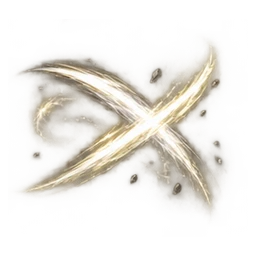
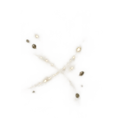
- attack · fx:blade → crossSlash · mundaneHigh · 1.12× (target)Blood Tithe, Blood Tithe+
- attack · fx:blade → slash · resourceHigh · 1.25× (target)Sundering Hew, Sundering Hew+
- attack · fx:blade · bladeAttack → slash · mundaneLow · 0.8× (target)Slashing Strike, Slashing Strike +
- attack · fx:blade + fx:blood → whirlwind · mundaneHigh · 1.12× (target)Crimson Cleave, Crimson Cleave+, Sunderplate · +1 more variants
- attack · fx:blade + fx:blood → slash · mundaneLow · 0.8× (target)Serrated Blade, Serrated Blade+, Rend · +7 more variants
- attack · fx:blade + fx:blood + fx:flourish → bloodSlash · resourceLow · 1× (target)Draw Cut, Draw Cut+
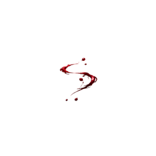
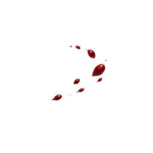
- attack · fx:blade + fx:blood + fx:gorefire → bloodSlash · resourceLow · 1× (target)Gorefire Slash, Gorefire Slash+
- attack · fx:blade + fx:blood + fx:pierce → whirlwind · mundaneHigh · 1.12× (target)Impale, Impale+
Current card tags → sprite sets · 2/9
Existing assignments, including equipment and card-specific exceptions. Matched rules are shared by the preview and solo/co-op combat.
- attack · fx:blade + fx:flourish → whirlwind · mundaneLow · 0.8× (target)Shiv, Shiv+, Quick Cut · +3 more variants
- attack · fx:blade + fx:flourish → crossSlash · mundaneLow · 0.8× (target)Twin Prick, Twin Prick+
- attack · fx:blade + fx:flourish → whirlwind · mundaneHigh · 1.12× (target)Thousand Cuts, Thousand Cuts+
- attack · fx:blade + fx:guard + fx:shield → shieldBash · mundaneLow · 0.8× (target)Shield Bash, Shield Bash+
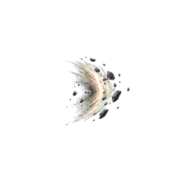
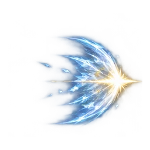
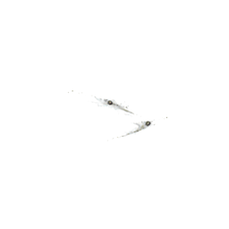
- attack · fx:blade + fx:guile → slash · resourceLow · 1× (target)Ambush, Ambush+
- attack · fx:blade + fx:guile → slash · mundaneLow · 0.8× (target)Hamstring, Hamstring+, Low Blow · +1 more variants
- attack · fx:blade + fx:guile → whirlwind · mundaneHigh · 1.12× (target)Cheap Shot, Cheap Shot+
- attack · fx:blade + fx:heavy → heavyImpact · mundaneHigh · 1.12× (target)Cleaving Blow, Cleaving Blow+, Stomp · +1 more variants
- attack · fx:blade + fx:heavy → slash · mundaneLow · 0.8× (target)Kick Off, Kick Off+
- attack · fx:blade + fx:precision → thrust · mundaneHigh · 1.12× (target)Coup de Grace, Coup de Grace+, Deathblow · +1 more variants
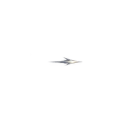
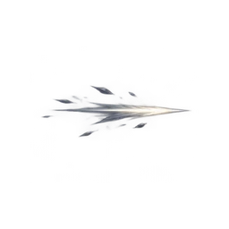
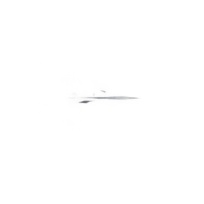
- attack · fx:blade + fx:precision → thrust · resourceHigh · 1.25× (target)Assassinate, Assassinate+
- attack · fx:blade + fx:starstone → crossSlash · mundaneLow · 0.8× (target)Star Slicer, Star Slicer+
Current card tags → sprite sets · 3/9
Existing assignments, including equipment and card-specific exceptions. Matched rules are shared by the preview and solo/co-op combat.
- attack · fx:blade + fx:starstone → whirlwind · mundaneHigh · 1.12× (target)Moonrend Cut, Moonrend Cut+, Astral Cleave · +1 more variants
- attack · fx:blight + fx:ritual → heavyImpact · mundaneLow · 0.8× (target)Blight Touch, Blight Touch+, Plague Bearer · +5 more variants
- attack · fx:blight + fx:ritual → heavyImpact · mundaneHigh · 1.12× (target)Scourge, Scourge+
- attack · fx:flourish + fx:guard + fx:riposte → riposte · mundaneLow · 0.8× (target)Guard Counter, Guard Counter+, Riposte · +1 more variants
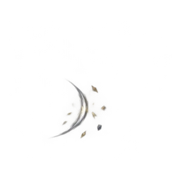
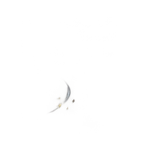
- attack · fx:flourish + fx:pierce · daggerPierceAttack → whirlwind · mundaneLow · 0.8× (target)Piercing Flurry, Piercing Flurry +
- attack · fx:frost + fx:ranged + fx:starstone → thrust · mundaneLow · 0.8× (projectile → impact)Frost Nova, Frost Nova+
- attack · fx:guard + fx:ranged + fx:starstone → thrust · mundaneLow · 0.8× (projectile → impact)Starblade Phalanx, Starblade Phalanx+
- attack · fx:guard + fx:shield · shieldAttack → shieldBash · mundaneLow · 0.8× (target)Shield Strike, Shield Strike +
- attack · fx:guile → heavyImpact · mundaneLow · 0.8× (target)Sap, Sap+
- attack · fx:heal + fx:ritual → heavyImpact · mundaneLow · 0.8× (target)Sacred Harvest, Sacred Harvest+, Crimson Rite · +3 more variants
- attack · fx:heavy + fx:ranged + fx:starstone → thrust · mundaneHigh · 1.12× (projectile → impact)Meteorite, Meteorite+, Meteor Swarm · +1 more variants
- attack · fx:pierce + fx:precision + fx:ranged · bowPierceAttack → thrust · mundaneLow · 0.8× (projectile → impact)Piercing Shot, Piercing Shot +
Current card tags → sprite sets · 4/9
Existing assignments, including equipment and card-specific exceptions. Matched rules are shared by the preview and solo/co-op combat.
- attack · fx:pierce + fx:ranged → thrust · mundaneLow · 0.8× (projectile → impact)Ricochet, Ricochet+, Fan of Knives · +1 more variants
- attack · fx:pierce + fx:starstone → thrust · mundaneLow · 0.8× (target)Starstone Kris, Starstone Kris+
- attack · fx:ranged + fx:starstone → starbolt · resourceLow · 1× (projectile → impact)Starstone Pebble, Starstone Pebble+
- attack · fx:ranged + fx:starstone → thrust · mundaneLow · 0.8× (projectile → impact)Comet Fragment, Comet Fragment+, Starstone Arc · +9 more variants
- attack · fx:ranged + fx:starstone → thrust · mundaneHigh · 1.12× (projectile → impact)Star Shower, Star Shower+, Starlance · +7 more variants
- attack · fx:ritual → heavyImpact · mundaneLow · 0.8× (target)Flagellation, Flagellation+, Cull the Weak · +9 more variants
- attack · fx:ritual → heavyImpact · mundaneHigh · 1.12× (target)Grave Offering, Grave Offering+, Blight Nova · +1 more variants
- attack · fx:starstone · staffMagicAttack → heavyImpact · mundaneLow · 0.8× (target)Staff Magic Strike, Staff Magic Strike +
- attack · fx:utility · unarmedAttack → heavyImpact · mundaneLow · 0.8× (target)Unarmed Strike, Unarmed Strike +
- power · fx:blood → bloodAura · retained · 1× (caster)Goreblood, Goreblood+
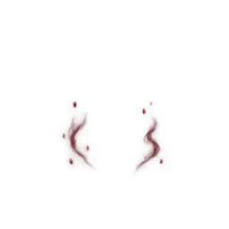
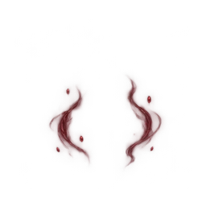
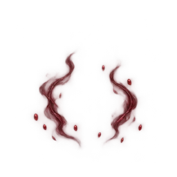
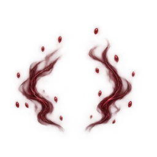
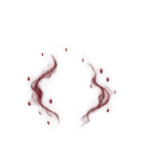
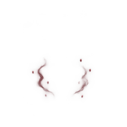
- power · fx:flourish + fx:oath → sacredAura · retained · 1× (caster)Afterimage, Afterimage+, Deadly Tempo · +1 more variants
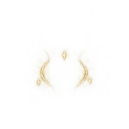
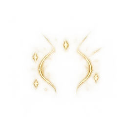
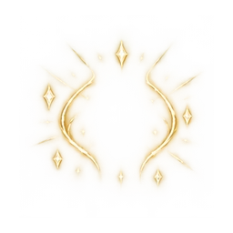
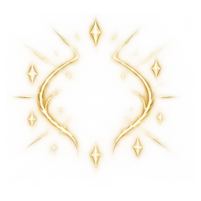
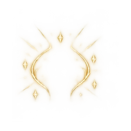
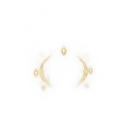
- power · fx:guile + fx:oath → sacredAura · retained · 1× (caster)Opportunist, Opportunist+
Current card tags → sprite sets · 5/9
Existing assignments, including equipment and card-specific exceptions. Matched rules are shared by the preview and solo/co-op combat.
- power · fx:oath + fx:venom → poisonAura · retained · 1× (caster)Envenom, Envenom+
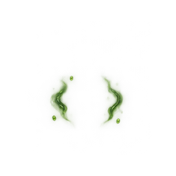
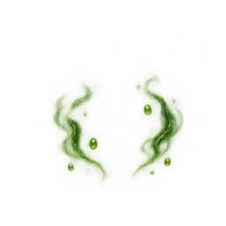
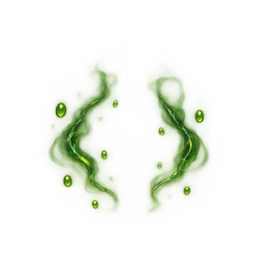
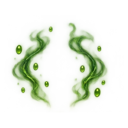
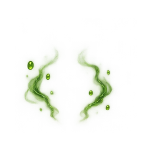
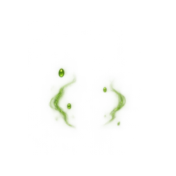
- power · fx:ritual → ritual · retained · 1× (caster)Thorn Halo, Thorn Halo+, Communion · +11 more variants
- power · fx:starstone → focusMotes · retained · 1× (caster)Stargazer, Stargazer+, Astral Armor · +11 more variants
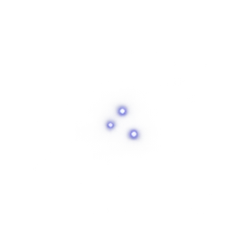
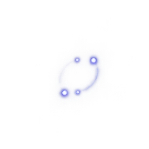
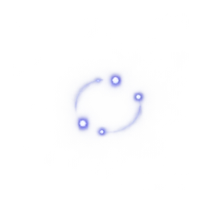
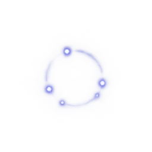
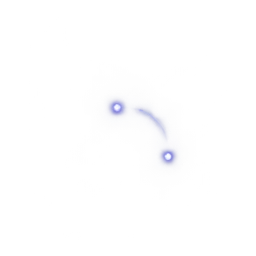
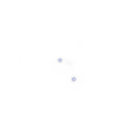
- power · fx:utility → focusMotes · retained · 1× (caster)Rallying Standard, Rallying Standard+, Unbreakable · +5 more variants
- skill · fx:arcane + fx:barrier + fx:guard + fx:starstone → barrier · retained · 1× (caster)Umbral Ward, Umbral Ward+
- skill · fx:arcane + fx:bind + fx:guard + fx:starstone + fx:ward → arcaneWard · retained · 1× (caster)Starstone Ward, Starstone Ward+
- skill · fx:arcane + fx:guard + fx:ritual + fx:ward · sceptreGuard → arcaneWard · retained · 1× (caster)Ritual Ward, Ritual Ward +
- skill · fx:ash + fx:bind + fx:guile → steelGlint · mundaneLow · 0.8× (target)Pocket Sand, Pocket Sand+
- skill · fx:ash + fx:guile → dustStep · mundaneLow · 0.8× (caster)Smoke Pellet, Smoke Pellet+, Vanish · +1 more variants
- skill · fx:ash + fx:guile → steelGlint · mundaneLow · 0.8× (target)Smoke Bomb, Smoke Bomb+
- skill · fx:barrier + fx:guard + fx:magic + fx:starstone → barrier · retained · 1× (caster)Crystal Barrier, Crystal Barrier+
- skill · fx:bind → steelGlint · mundaneLow · 0.8× (target)Hex, Hex+
Current card tags → sprite sets · 6/9
Existing assignments, including equipment and card-specific exceptions. Matched rules are shared by the preview and solo/co-op combat.
- skill · fx:bind + fx:blade + fx:precision → steelGlint · mundaneLow · 0.8× (target)Execution Window, Execution Window+
- skill · fx:bind + fx:guile → steelGlint · mundaneLow · 0.8× (target)Disorient, Disorient+
- skill · fx:bind + fx:ritual → steelGlint · mundaneLow · 0.8× (target)Litany, Litany+
- skill · fx:blade + fx:blood → steelGlint · mundaneLow · 0.8× (target)Bloodletter, Bloodletter+
- skill · fx:blade + fx:flourish · weaponTechnique → dustStep · mundaneLow · 0.8× (caster)Weapon Technique, Weapon Technique +
- skill · fx:blight + fx:ritual → steelGlint · mundaneLow · 0.8× (target)Contagion, Contagion+, Blight Bloom · +1 more variants
- skill · fx:blight + fx:ritual → steelGlint · mundaneHigh · 1.12× (target)Plague of Butterflies, Plague of Butterflies+
- skill · fx:blood → steelGlint · mundaneLow · 0.8× (target)Hemorrhage, Hemorrhage+
- skill · fx:blood + fx:ritual → steelGlint · mundaneLow · 0.8× (caster)Blood Pact, Blood Pact+
- skill · fx:bulwark + fx:guard → ward · retained · 1× (caster)Bracing Stance, Bracing Stance+
- skill · fx:bulwark + fx:guard + fx:oath → ward · retained · 1× (caster)Enter: Bulwark, Enter: Bulwark+
- skill · fx:dodge → dustStep · retained · 1× (caster)Evasive Guard, Evasive Guard+, Dodge Roll · +1 more variants
Current card tags → sprite sets · 7/9
Existing assignments, including equipment and card-specific exceptions. Matched rules are shared by the preview and solo/co-op combat.
- skill · fx:dodge + fx:flourish · unarmedTechnique → dustStep · retained · 1× (caster)Dodge Roll, Dodge Roll +
- skill · fx:flourish → dustStep · mundaneLow · 0.8× (caster)Quickstep, Quickstep+, Acrobatics · +1 more variants
- skill · fx:flourish + fx:guard → physicalGuard · retained · 1× (caster)Backstep, Backstep+
- skill · fx:flourish + fx:guile → dustStep · mundaneLow · 0.8× (caster)Shadowstep, Shadowstep+
- skill · fx:frost + fx:guard + fx:starstone + fx:ward → frostAura · retained · 1× (caster)Frost Veil, Frost Veil+
- skill · fx:gorefire + fx:oath → gorefire · retained · 1× (caster)Enter: Gorefire, Enter: Gorefire+
- skill · fx:guard → physicalGuard · retained · 1× (caster)Defend, Defend+, Footwork · +17 more variants
- skill · fx:guard · unarmedGuard → guardPulse · retained · 1× (caster)Evasive Guard, Evasive Guard +
- skill · fx:guard · weaponGuard → parry · retained · 1× (caster)Weapon Guard, Weapon Guard +
- skill · fx:guard + fx:guile → physicalGuard · retained · 1× (caster)Smoke Veil, Smoke Veil+, Misdirect · +1 more variants
- skill · fx:guard + fx:heal + fx:ritual → arcaneWard · retained · 1× (caster)Penance, Penance+, Last Mercy · +1 more variants
- skill · fx:guard + fx:magic + fx:starstone + fx:ward → magicGuard · retained · 1× (caster)Warding Star, Warding Star+
Current card tags → sprite sets · 8/9
Existing assignments, including equipment and card-specific exceptions. Matched rules are shared by the preview and solo/co-op combat.
- skill · fx:guard + fx:magic + fx:starstone + fx:ward · staffGuard → magicGuard · retained · 1× (caster)Arcane Ward, Arcane Ward +
- skill · fx:guard + fx:ritual → arcaneWard · retained · 1× (caster)Bloodletting, Bloodletting+, Blightward · +1 more variants
- skill · fx:guard + fx:shield · shieldGuard → physicalGuard · retained · 1× (caster)Shield Defend, Shield Defend +
- skill · fx:guard + fx:starstone → magicGuard · retained · 1× (caster)Astral Insight, Astral Insight+
- skill · fx:guile → dustStep · mundaneLow · 0.8× (caster)Feint, Feint+, Pilfer · +5 more variants
- skill · fx:heal → steelGlint · mundaneLow · 0.8× (caster)War Surgeon, War Surgeon+, Field Dressing · +1 more variants
- skill · fx:heal → steelGlint · mundaneLow · 0.8× (caster)Shared Flame, Shared Flame+
- skill · fx:heal + fx:ritual → cleanse · resourceLow · 1× (caster)Urgent Heal, Urgent Heal+
- skill · fx:heal + fx:ritual → steelGlint · mundaneLow · 0.8× (caster)Transfusion, Transfusion+, Reclamation · +2 more variants
- skill · fx:heal + fx:ritual → steelGlint · mundaneHigh · 1.12× (caster)Second Bloom, Last Rites, Last Rites+
- skill · fx:oath + fx:ritual → steelGlint · mundaneHigh · 1.12× (caster)Gilded Oath, Gilded Oath+
- skill · fx:oath + fx:venom → steelGlint · mundaneLow · 0.8× (target)Venomcoat, Venomcoat+
Current card tags → sprite sets · 9/9
Existing assignments, including equipment and card-specific exceptions. Matched rules are shared by the preview and solo/co-op combat.
- skill · fx:precision + fx:ranged · bowTechnique → steelGlint · mundaneLow · 0.8× (caster)Steady Aim, Steady Aim +
- skill · fx:ranged + fx:venom → steelGlint · mundaneHigh · 1.12× (target)Toxic Volley, Toxic Volley+
- skill · fx:ritual → steelGlint · mundaneLow · 0.8× (caster)Martyr's Blood, Martyr's Blood+
- skill · fx:ritual · staffTechnique → steelGlint · mundaneLow · 0.8× (caster)Staff Channel, Staff Channel +
- skill · fx:starstone → steelGlint · mundaneLow · 0.8× (caster)Scholar's Insight, Scholar's Insight+, Twinkling · +5 more variants
- skill · fx:starstone → steelGlint · mundaneHigh · 1.12× (caster)Gravity Well, Gravity Well+
- skill · fx:starstone → steelGlint · mundaneHigh · 1.12× (caster)Time Dilation, Time Dilation+
- skill · fx:utility → steelGlint · mundaneLow · 0.8× (caster)Warcry, Warcry+, Warrior's Vow · +7 more variants
- skill · fx:utility → steelGlint · mundaneLow · 0.8× (caster)Blinding Sand, Blinding Sand+, Hamstring · +3 more variants
- skill · fx:utility → steelGlint · mundaneHigh · 1.12× (caster)Oath of Ash, Oath of Ash+